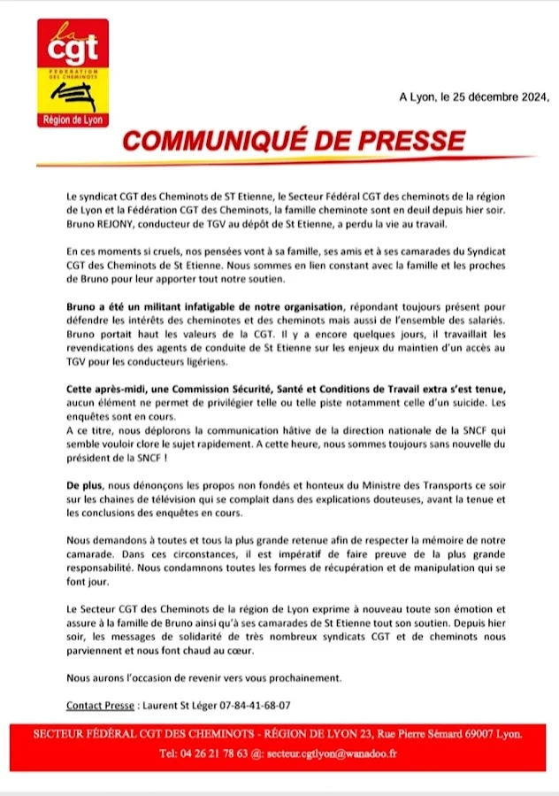

Communiqué relayé
Mort d’un conducteur. Le communiqué de la CGT cheminots
Date indiquée par Facebook · 27 décembre 2024
Repères éditoriaux
Nous avions relayé le communiqué syndical et la réaction qui l’accompagnait. Le document est joint avec l’article, à la suite de la publication d’origine.
Texte conservé avec la publication
Les hyènes et les crocodiles.
Le suicide du collègue conducteur a vu apparaître deux animaux bien connus sur Twitter.
Tout d’abord les hyènes, trop souvent les journalistes des chaînes d’infos rapides, avides de témoignages d’usagers ulcérés par le retard de leur TGV, ignorant volontairement la cause, tant le SNCF bashing est un sport national.
Puis arrivent ensuite les crocodiles. Comme le saurien, il a une grande gueule et des petits bras, et il vient généralement faire du cheminot bashing à la suite des hyènes. On le reconnaît à l’usage des termes « Gauchiasse, fainéant, syndicaliste, communiste, etc… ». Et utilise souvent pour preuve la production journalistique des hyènes pour prouver ses dires.
Quand on demande au crocodile son métier, son salaire et les avantages afférents, il a tendance à ne jamais répondre. Le courage du crocodile s’arrêtant à son marigot.
BB27000 sous X ex-twitter

Sources
Archive rouge · export Facebook · AR-0002-FB-01217
À lire aussi · À Parthenay, solidarité avec les militants convoqués à la gendarmerie · Le lien d’origine